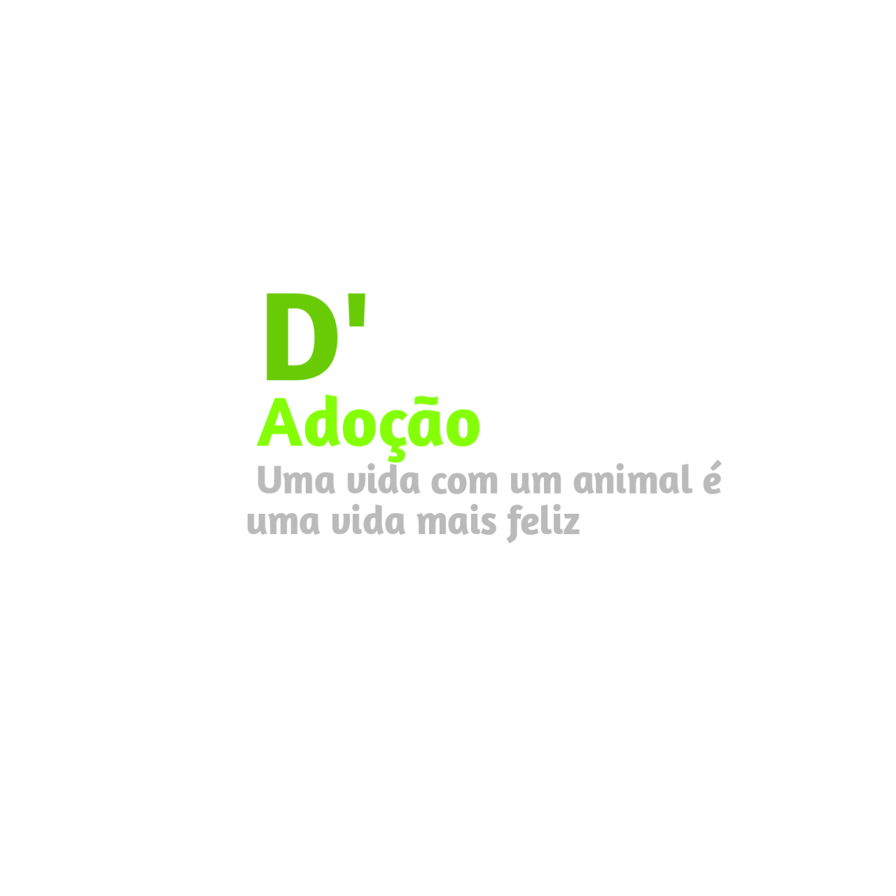
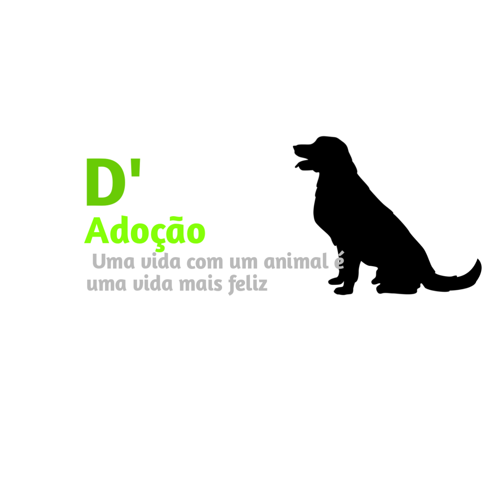

D' Dogs é um site onde você pode ver cachorros abandonados, adota-los ou saber mais sobre a
saúde do seu pet.

⠀Mais informações⠀
Em Guarapuava, muitos cachorros e animais de estimação são abandonados diáriamente,
e às pessoas/cidadãos e o governo, podem estar tendo muitos problemas devido a isso, criando até canis
para não deixar os animais
abandonados, por isso fiz este site, para divulgar cãezinhos abandonados desses canis, para fazerem
sua adoção, assim esses animais
de estimação terão uma casa e a cidade não terá muitos problemas com isso e para ajudar donos de cachorros
a emcontrarem seus cachorros perdidos.